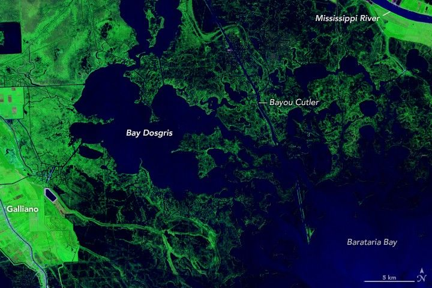

Forty Years of Change in Louisiana’s Wetlands
In the early 1800s, pirate Jean Lafitte smuggled goods and slaves through Louisiana’s muddy coastal waters, navigating the bayous, bays, and lakes up to New Orleans. However, any map he used would likely lead today’s sailors astray. Satellite images show that in the past 40 years alone, Louisiana’s coastal areas have undergone substantial changes.
The image pair above shows Bay Dosgris, about 30 miles south of New Orleans, where Lafitte likely passed through with his crew centuries ago. Between 1985 (left) and 2024 (right), much of the wetland surrounding Bay Dosgris has become open water. The images were acquired by the TM (Thematic Mapper) on Landsat 5 and the OLI-2 (Operational Land Imager-2) on Landsat 9, respectively.
The images above and below are false color, in which open water appears dark blue and low-lying areas inundated with water (marsh) appear dark blue-green. Vegetated areas farther inland appear bright green.
By analyzing NASA/USGS Landsat satellite images like these, researchers at Wake Forest University developed a new tool to track wetlands across the U.S. Atlantic and Gulf coasts. The tool allows users to observe both abrupt and gradual changes and to examine how phenomena, from storms to sea level rise, have reshaped coastal ecosystems. The study, published in Remote Sensing Applications: Society and Environment, was funded by the NASA Ocean Biology and Biogeochemistry Program.
“Wetland managers need long time series data and a more holistic view of change so they can customize that data to their needs,” said Courtney Di Vittorio, an assistant professor at Wake Forest University and lead author of the study.
Coastal wetlands—zones where the mainland blends with the ocean—protect communities against flooding, provide habitat for wildlife, safeguard against erosion, and support commercial fisheries. However, the extent of many coastal wetlands worldwide is in decline.
Robust U.S.-focused wetland maps are currently available from the U.S. Fish and Wildlife Service’s National Wetlands Inventory (NWI) and NOAA’s Coastal Change Analysis Program (C-CAP). But the researchers saw a gap. Although existing maps are effective in catching abrupt changes, such as the sudden appearance of a building or clearing of a forest, they often miss more gradual changes.
To address this gap, the tool created by Di Vittorio’s team uses Landsat data from across the U.S. Atlantic and Gulf coasts from 1985 to 2022. The final maps sort wetlands into 10 classes, six of which represent an ecosystem transitioning between classes. The major innovation is the ability to classify different types of change.
The animation above shows the wetland area around Lake Lery, southeast of New Orleans. In 2005, 2008, and 2024, major flooding enlarged the lake and built new channels through the surrounding vegetation. These flooding events were likely associated with hurricanes Katrina, Gustav, and Francine; restoration of the surrounding wetlands took years.
Before the floods, the researchers’ algorithm classified much of the area as emergent wetland—a coastal salt marsh. While flooded, those areas became classified as open water. Once the floodwaters receded, the algorithm reclassified them as emergent wetland. Across the time series, this kind of change is characterized as abrupt and temporary; abrupt because it went directly from wetland to open water, and temporary because it reverted to its original state.
In the same wetland, some areas transformed much more gradually into open sea. These parts of the marsh transitioned from emergent wetland to a mixed classification—a blend of emergent wetland and open water—before finally ending up as open water. Areas that stayed open water for the remainder of the time series were characterized as undergoing gradual, permanent change. Other wetland inventories don’t register mixed classifications, often missing gradual changes.
Not all change involves loss. In the Isles Dernieres Barrier Islands Refuge, shown above, various restoration projects over the past three decades have rebuilt these barrier islands. With sand dredged from the ocean floor and the Mississippi River, these revitalized islands help protect nearby communities from storm surge.
Di Vittorio’s team created their classification maps for the Atlantic and Gulf coasts, but the same product could be made for any coastal region in the U.S. Looking ahead, Di Vittorio said that her team plans to work on identifying drivers of wetland change and quantifying the risks to various regions. In North Carolina, for example, where Di Vittorio is based, sea level rise, hurricanes, and several other factors have contributed to the expansion of ghost forests—areas where coastal trees have been submerged and killed. Ideally, she said, they can tailor the application to local needs.
“This new multi-temporal geospatial database is more complex than the existing wetland maps,” Di Vittorio said. “A big priority of ours is getting this into people’s hands and helping them figure out how they can use it.”